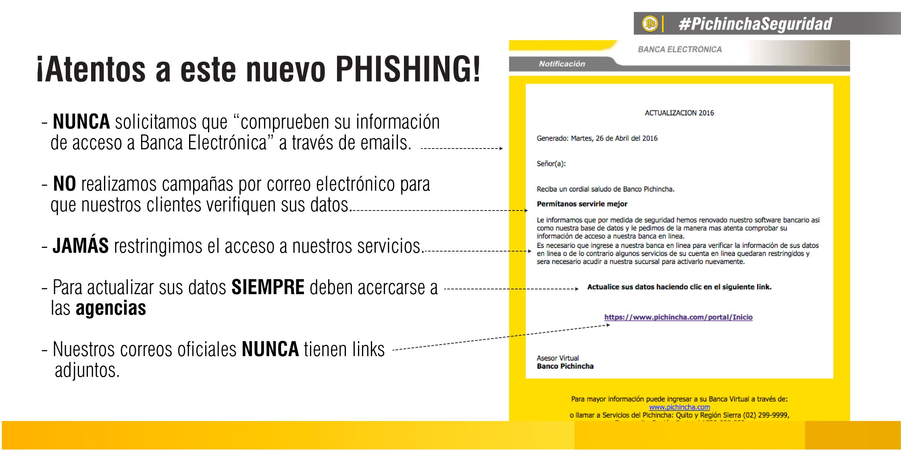

El phishing es un tipo de fraude en línea en el que los ciberdelincuentes intentan robar información personal como contraseñas o datos bancarios, haciéndose pasar por empresas o instituciones de confianza.
Los atacantes envían correos electrónicos, mensajes de texto o incluso crean sitios web falsos que imitan a los de empresas legítimas. El objetivo es engañar a los usuarios para que ingresen información personal o hagan clic en enlaces que comprometan su seguridad.
Ejemplo de phishing - Banco Pichincha.
Algunos ejemplos comunes de phishing son: correos electrónicos falsos de bancos pidiendo verificar cuentas. Mensajes de texto que alertan sobre actividad sospechosa en cuentas, y ofertas de premios o descuentos que solicitan datos personales.
✅ No hagas clic en enlaces sospechosos y verifica URLs. ✅ Revisa siempre la dirección de correo del remitente. ✅ Usa contraseñas fuertes y cámbialas regularmente. ✅ No descargues archivos adjuntos de fuentes desconocidas. ✅ Desconfía de ofertas demasiado buenas para ser verdad.
✅ Cambia tus contraseñas de inmediato. ✅ Informa a la empresa o institución involucrada. ✅ Activa la verificación en dos pasos para más seguridad. ✅ Reporta el fraude a las autoridades.